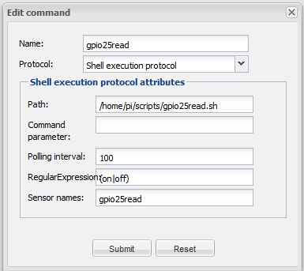

Hello,
I want to read the GPIO state via a shellscript on a raspberry pi.
First i installed the wiringPi package (e.g. ~gpio -g read 25 > "1" or "0" for state of the gpio
So in OR i created a sensor linked to a script (gpio25read.sh) and polling 100 (ms).
So it seems to work fine, but in the sensor logfile i get:
WARN 2013-04-26 07:40:56,341 : Event producer bound to sensor (ID = 2,590,027) returned a value that is not consistent with sensor's datatype : 0 setting sensor value to 'N/A'
WARN 2013-04-26 07:41:56,745 : Event producer bound to sensor (ID = 2,590,027) returned a value that is not consistent with sensor's datatype : 1 setting sensor value to 'N/A'
> so "0" and "1" is the state of the gpio.
Unfortunately the sensor shows N/A.
I treid to modify the RegularExpression to (1|0) but no success.
Maybe there is a "little" fault by my setup of the commands.
thanks for response
Christoph
{kind=link}
|
If you use a switch sensor, it expects "on" and "off" as a result. |
|
Hello Marcus, thanks for your reply ... Unfortunately i only get N/A on my screen. Maybe i have some troubles with the shell setup in my OR Modeler?  many Thanks for answers ... |
|
If "gpio25read.sh" already just returns on or off you don't need the regex. You could also invoke a cript which returns 0 and 1 and create a custom sensor that maps 0->off and 1->on. |
|
I have done both (time set up to 5m > now 10s) and i created a custom switch. Depends the shellexe communication on the controller version? |
|
update: it works! |
|
Hello Christoph Can you please explain in detail how you did the mapping (Name, Value) of the custom switch? |
|
See Designer 2.0 - Create Custom Sensor |